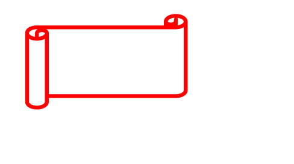

tam boyutuna denk olması gereklidir. Büyük bir resim için küçük bir görüntü alanı belirtilmesi, resmin indirilme süresini kısaltmaz. Resim yine tüm olarak orijinal büyüklüğü ile indirilir fakat daha küçük olarak görüntülenir. Kısa indirilme süreleri için, indirilecek resmi bir resim düzenleme programından yararlanarak daha küçük bir dosya olarak düzenleyip, indirileceği adrese önceden yerleştirmiş olmak gerekir. Belki bugün için en uygun davranış biçimi, belge çözümleyicisinin çalışmasına müdahele etmemek ve boyut niteliklerini